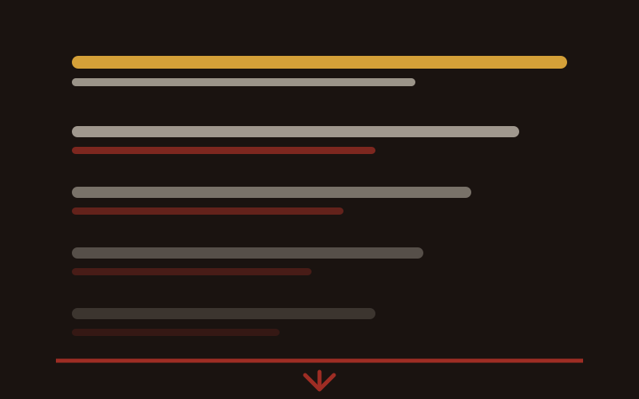

NDIS Digital Marketing & Acceleration
Digital is how small and medium providers get found. Here is what belongs in the plan.
Read more
SEO makes your website show up when somebody searches for what you do. It is slower than paid search, it is cheaper per enquiry over time, and it is the one channel that keeps working after you stop paying for it.

Search engine optimisation is the work of getting your website to come up when somebody searches a term that matters to your business. Not traffic for its own sake. The point is the person who is already looking for what you do and is close to deciding who to call.
That is the whole argument for it. Somebody who types NDIS support coordination Penrith is not browsing. They have a plan, a problem and a shortlist, and the shortlist is whatever came up on the first screen. If you are not on that screen, you were never in the running, and you will never know it happened.
Google crawls your site, reads the words and the structure, and works out what each page is about and how much to trust it. Then it matches that against what somebody typed. Everything in SEO is one of two jobs: making it easy for Google to understand what you do, and giving it reasons to believe you are worth putting in front of somebody.
There is a newer half to this now. AI answers and chat assistants are increasingly the thing people ask first, and they draw on the same pages. Being the clearest, most complete source on a subject is what gets you cited, which is the same work by a different name.

Before anything happens off your site, the site itself has to be worth ranking. Four things carry almost all of the weight, and they are all inside your control.
Pages that genuinely answer what somebody asked, written like a person wrote them. A page about supported independent living should explain what it is, who it suits, what it costs to a family and what happens when they call. That is what earns a ranking, and it is also what earns the enquiry once the ranking arrives.
The terms people search need to appear in your page titles, your headings and your copy, because that is how Google works out what the page is for. Used naturally. Stuffing a suburb name in eleven times reads badly to a family and gets read as manipulation by Google, so it costs you twice.
Almost every family finds you on a phone, often at night, often while dealing with something else. A site that is slow or awkward on a small screen loses the enquiry before the content matters. This is not a refinement to get to later. It is the first test the page has to pass.
Load speed, clean code, one clear h1 per page, headings in order, page titles and meta descriptions written for the search rather than left as defaults, and no two pages competing with near-identical copy. None of this is glamorous and all of it is checkable in an afternoon.

Ranking for a term nobody types is not a win. It is just a quiet page with a good score.
Chris Lapa
This is where the plan is either made or wasted. Start from the topics your business genuinely serves, then find out what people actually type when they need those things. Tools like SEMrush or Google Keyword Planner will give you search volume, which is roughly how many people search a term each month, and some sense of how hard it will be to rank for.
What you are looking for is the balance. High volume with high competition means years of work for a term you may never win. Low volume with low competition can be worth far more than it looks, because the people typing it know exactly what they want.
A long tail search is a longer, more specific phrase, usually three words or more. Fewer people type it, and the ones who do are much closer to picking up the phone. Best running shoes for women with wide feet converts at a completely different rate to running shoes, and the same holds for a provider: NDIS plan management for a first plan is a better term to own than NDIS.
They are also winnable. Fewer sites are competing for them, so a small provider can rank for a long tail phrase in months rather than never. Those rankings are where the early enquiries come from while the harder terms are still building.
Almost every search for a provider carries a place in it. That means a page for each area you genuinely serve, saying what you do there, rather than one services page hoping to cover forty suburbs at once. It is unglamorous work and it is the single most reliable way I know for a provider to start appearing in local searches.
The word genuinely is doing real work in that sentence. A page for a suburb you do not service is a page that wins an enquiry you have to turn down.
If you take three things from this piece, take these.
These two chase the same searches and behave nothing alike. It is worth being clear about the trade, because picking the wrong one for your situation wastes months either way.
The honest answer for a provider who needs enquiries this month is to run Google Ads now and build SEO underneath it. The ads carry you while the asset compounds. Then, as the rankings arrive, the ad spend becomes a choice rather than the only thing keeping the phone going.
This is the question that decides whether SEO is right for you, and it is the one most often answered dishonestly. Here is what the shape of it actually looks like.
Technical audit and fixes, keyword research, site structure, Google Business Profile, and the content plan. Nothing visible happens to your rankings in this window, and skipping it is why so many SEO projects never move.
Suburb pages and service pages go live. Google starts indexing them. You begin to see impressions for terms you were invisible for, which is the first real signal that anything is working.
Rankings move on the lower competition terms first, the long tail and the suburb searches. The first organic enquiries arrive. This is the earliest point at which judging the work is fair.
The harder terms start to move, organic traffic compounds, and cost per enquiry falls as volume grows against a fixed amount of work. This is the part that pays for the first six months.
If you need the phone ringing this month, SEO is the wrong tool and I will tell you so. It is the right tool for making sure that a year from now you are not still buying every enquiry.
Four ways I see SEO money disappear, in rough order of how often.
It is the work of getting your site to come up in Google and Bing for terms relevant to what you offer. What it does for a provider is bring you people who are already looking for your service, without paying per click, and to keep doing it after the work is finished.
Two steps. First, list the topics your business genuinely serves and the problems families come to you with. Second, put those through a keyword tool such as SEMrush or Google Keyword Planner to see what people actually type and how often. Then pick the terms with a workable balance of volume and competition, and start with the long tail ones.
Longer, more specific phrases, usually three words or more. Fewer people type them, competition for them is lower, and the people typing them are closer to deciding. They also tell you something useful about what your audience is actually worried about, which is worth having on its own.
Content that answers real questions, the search terms used naturally in titles and headings, a site that works properly on a phone, and a clean technical base: fast loading, headings in order, page titles and meta descriptions written on purpose, and no two pages competing with the same copy.
Paid ads appear the day you pay and stop the day you stop, and they can change direction the same afternoon. SEO takes months to build and keeps delivering afterwards, and it takes months to redirect. One is a tap, the other is an asset.
Not directly, and this is where it gets oversold. It catches people who are already searching. It does build recognition indirectly through long tail content: if somebody finds your guide while researching a question, they now know your name. For reaching people before they start looking, paid social does that job better.
The technical floor and the first suburb pages, yes, and doing them yourself will teach you what the reports mean. Bring somebody in when the basics are done and the next step is genuinely technical, or when months have passed with nothing moving and you cannot tell why.
SEO is one channel of seven. If you would rather have the whole pipeline run as one plan, that is Managed Growth.

Digital is how small and medium providers get found. Here is what belongs in the plan.
Read more

Reaching participants takes more than showing up. How Google Ads connects you with people actively searching for your services.
Read more

How marketing and referrals work together to grow a provider, and how to tell which one is doing the work.
Read more
The audit is free.